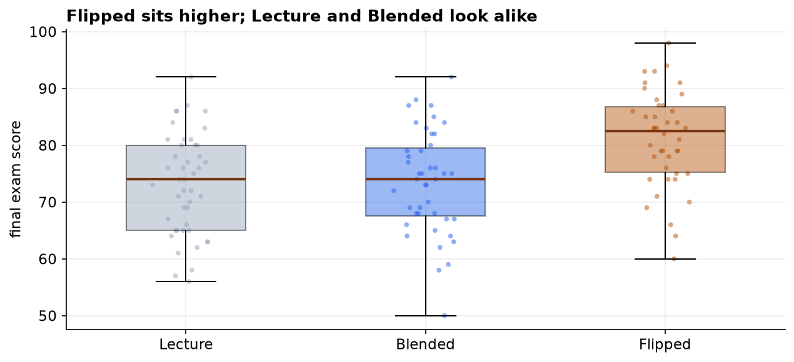
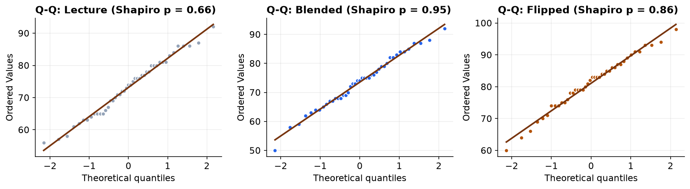
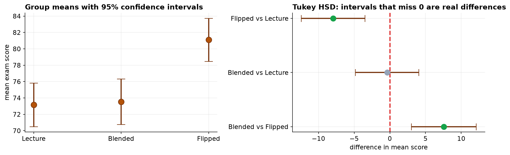

Every capstone so far compared at most two things. Real questions often involve three or more: three treatments, four store locations, five suppliers. You cannot answer those by running every pair through a t-test, because the false alarms pile up. Analysis of variance answers the whole question in one controlled test, and then hands off to a post-hoc procedure for the detail.
- Setting
- The same course was taught three ways across different sections, a traditional Lecture format, a Blended format, and a Flipped format, with every student's final exam score recorded.
- The question
- Does mean exam score differ across the three teaching formats, and if so, which formats differ?
- Why it matters
- The department is choosing a format for next year. Knowing that something differs is not enough; the decision needs a named format.
- What we do
- Check the ANOVA assumptions, run the one-way ANOVA, follow it with Tukey's post-hoc comparisons, and then examine the confound that makes a causal reading unsafe.
Method matters, but not evenly. F(2, 127) = 11.07, p < 0.001, so the three methods are not all the same. Tukey then locates the difference: Flipped outscores both others by about 8 points, while Lecture and Blended are indistinguishable (0.4 points apart, p = 0.98). Method explains about 15% of the variation in scores.
The Question, the Hypotheses, the Design
The same course was taught three ways across different sections: a traditional Lecture format, a Blended format mixing lecture with online work, and a Flipped format where students prepare before class and use class time for problems. Each student's final exam score was recorded.
| Framework step | This project |
|---|---|
| Goal | Decide whether mean exam score differs across the three teaching methods, and if so, which differ. |
| Hypotheses | H₀: all three means are equal vs H₁: at least one differs. α = 0.05. |
| Data type | Continuous outcome (exam_score) across a three-level nominal factor (method). |
| Design | Three independent groups of students. One factor, so a one-way design. |
Read H₁ carefully, because it is weaker than it looks: it claims only that at least one method differs. It does not say which, and it does not say all three do. That gap between what ANOVA proves and what we actually want to know is what the post-hoc test fills.
Meet the Data, Then Clean It
The export holds 137 rows for 135 students, and the method label arrived typed six different ways
(Flipped, flipped, Flipped and so on), which a computer would read as six
separate groups. So the first fix is to standardize the label, then drop duplicate rows,
missing scores, and impossible scores (an exam score has to fall between 0 and 100,
which rules out a 127 and a −5). That leaves 130 clean scores across three groups.

| Method | n | Mean score | SD |
|---|---|---|---|
| Lecture | 45 | 73.16 | 8.85 |
| Blended | 43 | 73.53 | 9.06 |
| Flipped | 42 | 81.10 | 8.45 |
Why Not Just Run Three t-Tests?
With three groups the tempting shortcut is three two-sample t-tests: Lecture vs Blended, Lecture vs Flipped, Blended vs Flipped. The reason we do not is the problem from Capstone 4. Each test carries its own 5% false-positive risk, so running three pushes the chance of at least one false alarm to about 14%. ANOVA asks the question once, at a controlled 5%.
What ANOVA actually compares is two kinds of variation. If the methods are all the same, the group means should scatter no more than you would expect from the ordinary spread of students within each group. The F statistic is precisely that ratio, and a large F means the groups are further apart than within-group noise can explain.
Check the Assumptions
ANOVA asks for the same two conditions as the two-sample t-test: each group roughly normal, and the groups sharing a common variance. Unlike Capstone 2, where the variance check forced a switch, everything here passes.

| Assumption | Check | Result |
|---|---|---|
| Normality (Lecture) | Shapiro-Wilk | W = 0.981, p = 0.66 |
| Normality (Blended) | Shapiro-Wilk | W = 0.989, p = 0.95 |
| Normality (Flipped) | Shapiro-Wilk | W = 0.985, p = 0.86 |
| Equal variance | Levene's test | W = 0.200, p = 0.82 |
| Equal variance | Bartlett's test | χ² = 0.204, p = 0.90 |
The three standard deviations land within half a point of one another (8.85, 9.06, 8.45), and both variance tests agree. The classic one-way ANOVA is valid, so no Welch correction or rank-based substitute is needed.
ANOVA First, Then the Post-Hoc
The F test is decisive: between-group variation is about eleven times what within-group noise would produce.
So the methods are not all equal. But that is only half an answer, and reporting it alone would be a mistake: it does not say which method differs. That is what Tukey's HSD provides, comparing all three pairs while holding the family-wise error at 5%.
| Comparison | Difference | 95% CI | Adjusted p | Verdict |
|---|---|---|---|---|
| Flipped vs Blended | +7.56 | [3.04, 12.08] | 0.0004 | real difference |
| Flipped vs Lecture | +7.94 | [3.47, 12.41] | 0.0001 | real difference |
| Blended vs Lecture | +0.38 | [−4.07, 4.83] | 0.978 | indistinguishable |

The Verdict, and the Confound Behind It
Students taught with the Flipped method scored about 8 points higher than students in either other format, and Lecture and Blended performed the same as each other. So the honest headline is not "the three methods differ" but one method outperforms and the other two are equivalent, which is a materially different recommendation. Method explains roughly 15% of score variation, leaving most of it to student-level factors this design never measured.
A significant F (the methods are not all alike), a medium-to-large effect size (η² ≈ 0.15), and post-hoc intervals that locate the difference in one specific method. Report all three, and be as explicit about the pair that did not differ as about the pair that did.
And the step that decides whether any of this supports changing how the course is taught:
- How were students assigned? If students picked their own section, we may be measuring who chooses a Flipped class rather than what a Flipped class does. Motivated students self-selecting into the format would produce exactly this result with no teaching effect at all. Random assignment, or at least a check that prior attainment is balanced across methods, is what licenses a causal reading.
- Who taught which section? Instructor skill rides along with method. If one energetic instructor taught all the Flipped sections, method and instructor cannot be separated in this design.
- One exam is a narrow outcome. A format that lifts exam scores may not equally lift retention, transfer, or student workload, and an adoption decision should weigh more than a single number.
- Do not over-read the tie. "Lecture and Blended are indistinguishable" means this study did not detect a difference, not that none exists. A small real gap could hide at this sample size.
ANOVA in Data Science & AI
Comparing three or more conditions on a numeric outcome is routine in modern experimentation and modeling.
| Where it appears | The groups |
|---|---|
| Multi-arm A/B/n testing | Three or more page or pricing variants compared on a continuous metric. |
| Model or prompt comparison | Several models or prompt templates scored on the same benchmark. |
| Hyperparameter settings | Validation scores across several configurations, before declaring a winner. |
| Feature screening | A numeric feature compared across the levels of a categorical variable. |
The multi-arm case is where teams most often go wrong: they run the experiment with four variants, compare each against control, and ship the one with p < 0.05, having never controlled the family-wise error. The disciplined pattern is the one in this capstone, an omnibus test first, then corrected pairwise comparisons, with effect sizes reported throughout. When variances differ across arms, Welch's ANOVA and the Games-Howell post-hoc are the unequal-variance counterparts.
Estimate, Do Not Just Test
ANOVA said the methods differ and Tukey said which. Neither said by how much, and Tukey has been computing the intervals all along. They deserve to be read out loud rather than left as a reject-or-not column.
| Comparison | Difference | 95% confidence interval | Verdict |
|---|---|---|---|
| Flipped over Lecture | +7.94 | +3.47 to +12.41 | differs |
| Flipped over Blended | +7.56 | +3.04 to +12.08 | differs |
| Lecture against Blended | −0.38 | −4.83 to +4.07 | cannot separate |
| Eta-squared | 0.149 | 0.063 to 0.279 (bootstrap) | — |
Blended against Lecture is not "no difference". Its interval runs from −4.8 to +4.1, so the data are compatible with Blended being nearly 5 points better or 4 points worse. That is a genuinely inconclusive result, and it is a different statement from "the two methods are equivalent". An interval says which one you have; a p-value of 0.978 does not.
The same discipline applies to the headline. Flipped beats Lecture by somewhere between 3.5 and 12.4 points, and a department deciding whether to retrain its staff should be told that range, because a 3-point gain and a 12-point gain justify very different amounts of effort. Eta-squared is wide too: teaching method plausibly accounts for anywhere from 6 to 28 percent of the variation in scores.
The full project, step by step
The companion notebook runs all twelve framework steps: it standardizes the messy group labels and cleans the
file with a printed audit trail, checks normality per group (Shapiro-Wilk, Q-Q) and equal variance (Levene,
Bartlett), quantifies the family-wise error that three t-tests would incur, fits the ANOVA with
statsmodels, computes eta-squared, runs Tukey HSD, and cross-checks with Kruskal-Wallis. Every
number here comes from its output, with a plain-language note after each result.
The dataset (capstone-teaching-methods-exam-scores.xlsx)
holds the scores on the scores sheet, with a codebook and notes, and it keeps the inconsistent labels,
blanks, duplicates, and impossible values so you can practice the cleaning. Two written reports accompany it: a
plain-language brief for a department chair, and a technical report, a journal-style
write-up with the full ANOVA table, post-hoc comparisons, diagnostics, and references.
🎓 Key Takeaways
- ✓ANOVA compares three or more groups in one test, avoiding the ~14% family-wise error that three separate t-tests would incur.
- ✓F is a ratio: between-group variation over within-group variation. Here F(2, 127) = 11.07, p < 0.001.
- ✓Same two assumptions as the t-test: normality per group (Shapiro p = 0.66, 0.95, 0.86) and equal variance (Levene p = 0.82).
- ✓A significant F is only half the answer: Tukey HSD showed Flipped beats both others by about 8 points while Lecture and Blended are indistinguishable (p = 0.98).
- ✓Report the effect size and the confound: η² ≈ 0.15, and self-selection into sections could explain the gap without any teaching effect.
Quiz: Test Yourself
Eight questions on this capstone, from the F ratio to the post-hoc. Answer them, hit Check Answers, and keep refining until you score 100%. Your progress is saved.